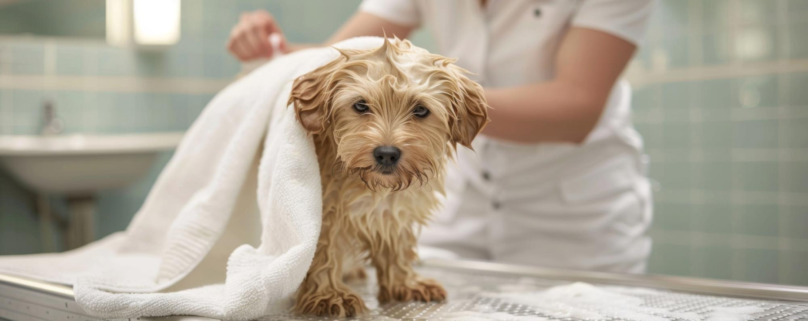
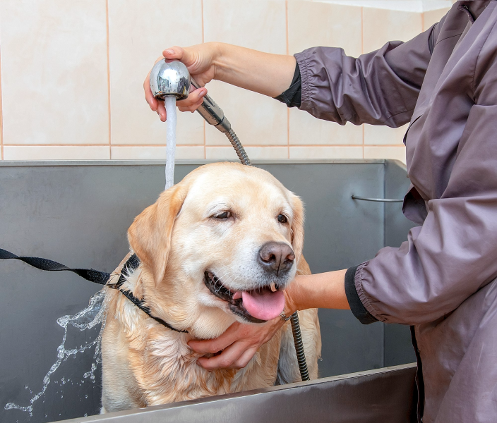

Grooming Services

GROOMING
BECAUSE EVERY PET DESERVES TO LOOK AND FEEL THEIR BEST
At WhiskerWash, we believe that grooming is more than just keeping your pet clean — it's about enhancing their overall well-being. A well-groomed pet not only looks great but feels more comfortable and confident. That's why we focus on providing professional grooming services tailored to meet the unique needs of each pet.
Our expert groomers use gentle techniques and high-quality, pet-safe products to ensure your furry friend enjoys every moment of their grooming session.
Grooming isn't just about appearances — it's an essential part of your pet's health. Regular grooming can prevent matting, reduce shedding, improve skin health, and even detect potential health concerns early.
Treat your furry companion to a grooming session that goes beyond the basics — where their comfort, health, and happiness are always the priority.
OUR GROOMING SERVICES INCLUDE:
1. BATHING & COAT CARE
Our Bathing & Coat Care service provides a gentle and thorough cleansing to remove dirt, debris, and excess oils from your pet's coat. We use premium, pet-safe products to ensure their skin stays healthy and their coat remains soft and shiny. This service helps reduce shedding and promotes overall coat health, leaving your pet feeling refreshed. Whether your pet has long or short fur, we tailor the bath to suit their specific needs. Afterward, your furry friend will look and feel their best, ready for cuddles and playtime.
2. HAIRCUTS & STYLING
Our Haircuts & Styling services are designed to suit your pet's breed, personality, and comfort. Whether it's a simple trim or a more intricate style, we provide customized grooming to keep your pet looking their best. Trust our experienced groomers to create a stylish look that enhances your pet's natural beauty.
3. NAIL TRIMMING & PAW CARE
Our Nail Trimming & Paw Care service ensures your pet's paws stay healthy and comfortable. We expertly trim nails to prevent overgrowth, discomfort, and potential injury. Additionally, we treat and moisturize the paws to keep them soft and smooth. Regular paw care helps maintain your pet's mobility and overall well-being.
5. TEETH BRUSHING
Teeth brushing is an essential part of maintaining your pet's overall health. Our professional grooming team uses safe, pet-friendly products to clean your pet's teeth and freshen their breath. Regular brushing helps prevent tartar buildup, gum disease, and bad breath. We focus on making the process comfortable for your pet, ensuring a positive experience. Keep your pet's smile bright and their mouth healthy with our expert teeth brushing services.
6. SPECIAL TREATMENTS
Special treatments include de-shedding, hypoallergenic baths, and flea care to address your pet's unique needs. These services help keep your pet comfortable, healthy, and looking their best.




Why Choose Us?
• Professional Groomers:
Our team of skilled and experienced groomers is dedicated to providing top-notch care for your pets. Trained to handle all breeds and temperaments, they ensure a safe, gentle, and stress-free grooming experience tailored to your pet's unique needs.
• Quality Products:
We use only premium, pet-safe products that are gentle on your pet's skin and coat. From shampoos to grooming tools, every product is carefully selected to ensure the best results while prioritizing your pet's comfort and well-being.
• Stress-Free Environment:
Our grooming services are designed to create a stress-free environment where your pet feels safe and relaxed. With gentle handling and a calm atmosphere, we ensure a positive experience that prioritizes your pet's comfort and well-being.